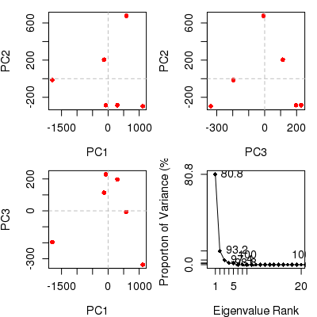

pca.xyz(xyz, subset = rep(TRUE, nrow(as.matrix(xyz))))
xyz matrix. Note: the
full xyz is projected onto this subspace.Performs principal components analysis (PCA) on a xyz
numeric data matrix.
Returns a list with the following components:
L eigenvalues.
U eigenvectors (i.e. the x, y, and z variable loadings).
z scores of the supplied xyz on the pcs.
au atom-wise loadings (i.e. xyz normalised eigenvectors).
sdev the standard deviations of the pcs.
mean the means that were subtracted.
Grant, B.J. et al. (2006) Bioinformatics 22, 2695--2696.
#-- Read transducin alignment and structures aln <- read.fasta(system.file("examples/transducin.fa",package="bio3d")) pdbs <- read.fasta.pdb(aln)pdb/seq: 1 name: http://www.rcsb.org/pdb/files/1TND.pdb pdb/seq: 2 name: http://www.rcsb.org/pdb/files/1TAD.pdb pdb/seq: 3 name: http://www.rcsb.org/pdb/files/1TAG.pdb pdb/seq: 4 name: http://www.rcsb.org/pdb/files/3V00.pdb pdb/seq: 5 name: http://www.rcsb.org/pdb/files/1FQJ.pdb pdb/seq: 6 name: http://www.rcsb.org/pdb/files/1FQK.pdb pdb/seq: 7 name: http://www.rcsb.org/pdb/files/2XNS.pdb PDB has ALT records, taking A only, rm.alt=TRUE pdb/seq: 8 name: http://www.rcsb.org/pdb/files/1KJY.pdb pdb/seq: 9 name: http://www.rcsb.org/pdb/files/2OM2.pdb pdb/seq: 10 name: http://www.rcsb.org/pdb/files/4G5Q.pdb PDB has ALT records, taking A only, rm.alt=TRUE pdb/seq: 11 name: http://www.rcsb.org/pdb/files/1GP2.pdb pdb/seq: 12 name: http://www.rcsb.org/pdb/files/1AGR.pdb pdb/seq: 13 name: http://www.rcsb.org/pdb/files/1CIP.pdb pdb/seq: 14 name: http://www.rcsb.org/pdb/files/1GFI.pdb pdb/seq: 15 name: http://www.rcsb.org/pdb/files/1GIA.pdb pdb/seq: 16 name: http://www.rcsb.org/pdb/files/2ZJY.pdb pdb/seq: 17 name: http://www.rcsb.org/pdb/files/3ONW.pdb pdb/seq: 18 name: http://www.rcsb.org/pdb/files/1BH2.pdb pdb/seq: 19 name: http://www.rcsb.org/pdb/files/1GG2.pdb pdb/seq: 20 name: http://www.rcsb.org/pdb/files/1GIT.pdb pdb/seq: 21 name: http://www.rcsb.org/pdb/files/3QI2.pdb pdb/seq: 22 name: http://www.rcsb.org/pdb/files/1SVK.pdb PDB has ALT records, taking A only, rm.alt=TRUE pdb/seq: 23 name: http://www.rcsb.org/pdb/files/1SVS.pdb pdb/seq: 24 name: http://www.rcsb.org/pdb/files/3FFA.pdb pdb/seq: 25 name: http://www.rcsb.org/pdb/files/1GIL.pdb pdb/seq: 26 name: http://www.rcsb.org/pdb/files/1AS0.pdb pdb/seq: 27 name: http://www.rcsb.org/pdb/files/1AS2.pdb pdb/seq: 28 name: http://www.rcsb.org/pdb/files/2ODE.pdb PDB has ALT records, taking A only, rm.alt=TRUE pdb/seq: 29 name: http://www.rcsb.org/pdb/files/2V4Z.pdb pdb/seq: 30 name: http://www.rcsb.org/pdb/files/4G5R.pdb pdb/seq: 31 name: http://www.rcsb.org/pdb/files/2IHB.pdb pdb/seq: 32 name: http://www.rcsb.org/pdb/files/4G5O.pdb PDB has ALT records, taking A only, rm.alt=TRUE# Find core core <- core.find(pdbs, #write.pdbs = TRUE, verbose=TRUE)core size 309 of 310 vol = 230.266 core size 308 of 310 vol = 205.404 core size 307 of 310 vol = 181.373 core size 306 of 310 vol = 160.715 core size 305 of 310 vol = 144.016 core size 304 of 310 vol = 129.352 core size 303 of 310 vol = 114.967 core size 302 of 310 vol = 104.141 core size 301 of 310 vol = 94.073 core size 300 of 310 vol = 86.326 core size 299 of 310 vol = 79.204 core size 298 of 310 vol = 73.164 core size 297 of 310 vol = 68.57 core size 296 of 310 vol = 64.346 core size 295 of 310 vol = 60.377 core size 294 of 310 vol = 56.493 core size 293 of 310 vol = 53.417 core size 292 of 310 vol = 50.379 core size 291 of 310 vol = 47.848 core size 290 of 310 vol = 45.441 core size 289 of 310 vol = 43.448 core size 288 of 310 vol = 41.464 core size 287 of 310 vol = 39.539 core size 286 of 310 vol = 37.874 core size 285 of 310 vol = 36.48 core size 284 of 310 vol = 35.105 core size 283 of 310 vol = 33.999 core size 282 of 310 vol = 32.973 core size 281 of 310 vol = 32.221 core size 280 of 310 vol = 31.472 core size 279 of 310 vol = 30.741 core size 278 of 310 vol = 30.032 core size 277 of 310 vol = 29.33 core size 276 of 310 vol = 28.694 core size 275 of 310 vol = 28.118 core size 274 of 310 vol = 27.536 core size 273 of 310 vol = 27.026 core size 272 of 310 vol = 26.523 core size 271 of 310 vol = 25.986 core size 270 of 310 vol = 25.44 core size 269 of 310 vol = 24.946 core size 268 of 310 vol = 24.593 core size 267 of 310 vol = 24.157 core size 266 of 310 vol = 23.721 core size 265 of 310 vol = 23.324 core size 264 of 310 vol = 22.977 core size 263 of 310 vol = 22.632 core size 262 of 310 vol = 22.297 core size 261 of 310 vol = 21.952 core size 260 of 310 vol = 21.581 core size 259 of 310 vol = 21.241 core size 258 of 310 vol = 20.864 core size 257 of 310 vol = 20.485 core size 256 of 310 vol = 20.143 core size 255 of 310 vol = 19.802 core size 254 of 310 vol = 19.453 core size 253 of 310 vol = 19.101 core size 252 of 310 vol = 18.859 core size 251 of 310 vol = 18.573 core size 250 of 310 vol = 18.271 core size 249 of 310 vol = 17.984 core size 248 of 310 vol = 17.686 core size 247 of 310 vol = 17.371 core size 246 of 310 vol = 17.089 core size 245 of 310 vol = 16.806 core size 244 of 310 vol = 16.535 core size 243 of 310 vol = 16.269 core size 242 of 310 vol = 16.035 core size 241 of 310 vol = 15.806 core size 240 of 310 vol = 15.549 core size 239 of 310 vol = 15.324 core size 238 of 310 vol = 15.102 core size 237 of 310 vol = 14.85 core size 236 of 310 vol = 14.638 core size 235 of 310 vol = 14.422 core size 234 of 310 vol = 14.24 core size 233 of 310 vol = 14.062 core size 232 of 310 vol = 13.858 core size 231 of 310 vol = 13.664 core size 230 of 310 vol = 13.472 core size 229 of 310 vol = 13.274 core size 228 of 310 vol = 13.101 core size 227 of 310 vol = 12.924 core size 226 of 310 vol = 12.736 core size 225 of 310 vol = 12.572 core size 224 of 310 vol = 12.373 core size 223 of 310 vol = 12.197 core size 222 of 310 vol = 12.049 core size 221 of 310 vol = 11.879 core size 220 of 310 vol = 11.673 core size 219 of 310 vol = 11.51 core size 218 of 310 vol = 11.381 core size 217 of 310 vol = 11.196 core size 216 of 310 vol = 11.037 core size 215 of 310 vol = 10.907 core size 214 of 310 vol = 10.765 core size 213 of 310 vol = 10.609 core size 212 of 310 vol = 10.466 core size 211 of 310 vol = 10.327 core size 210 of 310 vol = 10.184 core size 209 of 310 vol = 10.047 core size 208 of 310 vol = 9.896 core size 207 of 310 vol = 9.761 core size 206 of 310 vol = 9.652 core size 205 of 310 vol = 9.523 core size 204 of 310 vol = 9.378 core size 203 of 310 vol = 9.253 core size 202 of 310 vol = 9.159 core size 201 of 310 vol = 9.049 core size 200 of 310 vol = 8.929 core size 199 of 310 vol = 8.799 core size 198 of 310 vol = 8.669 core size 197 of 310 vol = 8.547 core size 196 of 310 vol = 8.41 core size 195 of 310 vol = 8.266 core size 194 of 310 vol = 8.127 core size 193 of 310 vol = 7.991 core size 192 of 310 vol = 7.854 core size 191 of 310 vol = 7.719 core size 190 of 310 vol = 7.59 core size 189 of 310 vol = 7.461 core size 188 of 310 vol = 7.336 core size 187 of 310 vol = 7.217 core size 186 of 310 vol = 7.087 core size 185 of 310 vol = 6.958 core size 184 of 310 vol = 6.842 core size 183 of 310 vol = 6.709 core size 182 of 310 vol = 6.581 core size 181 of 310 vol = 6.456 core size 180 of 310 vol = 6.336 core size 179 of 310 vol = 6.227 core size 178 of 310 vol = 6.129 core size 177 of 310 vol = 6.016 core size 176 of 310 vol = 5.934 core size 175 of 310 vol = 5.847 core size 174 of 310 vol = 5.764 core size 173 of 310 vol = 5.678 core size 172 of 310 vol = 5.6 core size 171 of 310 vol = 5.543 core size 170 of 310 vol = 5.461 core size 169 of 310 vol = 5.374 core size 168 of 310 vol = 5.291 core size 167 of 310 vol = 5.211 core size 166 of 310 vol = 5.133 core size 165 of 310 vol = 5.055 core size 164 of 310 vol = 4.975 core size 163 of 310 vol = 4.891 core size 162 of 310 vol = 4.801 core size 161 of 310 vol = 4.709 core size 160 of 310 vol = 4.644 core size 159 of 310 vol = 4.569 core size 158 of 310 vol = 4.479 core size 157 of 310 vol = 4.408 core size 156 of 310 vol = 4.343 core size 155 of 310 vol = 4.275 core size 154 of 310 vol = 4.191 core size 153 of 310 vol = 4.103 core size 152 of 310 vol = 4.016 core size 151 of 310 vol = 3.936 core size 150 of 310 vol = 3.864 core size 149 of 310 vol = 3.777 core size 148 of 310 vol = 3.687 core size 147 of 310 vol = 3.599 core size 146 of 310 vol = 3.514 core size 145 of 310 vol = 3.434 core size 144 of 310 vol = 3.349 core size 143 of 310 vol = 3.259 core size 142 of 310 vol = 3.18 core size 141 of 310 vol = 3.097 core size 140 of 310 vol = 3.025 core size 139 of 310 vol = 2.952 core size 138 of 310 vol = 2.875 core size 137 of 310 vol = 2.812 core size 136 of 310 vol = 2.729 core size 135 of 310 vol = 2.647 core size 134 of 310 vol = 2.563 core size 133 of 310 vol = 2.489 core size 132 of 310 vol = 2.407 core size 131 of 310 vol = 2.326 core size 130 of 310 vol = 2.26 core size 129 of 310 vol = 2.182 core size 128 of 310 vol = 2.109 core size 127 of 310 vol = 2.051 core size 126 of 310 vol = 1.993 core size 125 of 310 vol = 1.939 core size 124 of 310 vol = 1.883 core size 123 of 310 vol = 1.826 core size 122 of 310 vol = 1.772 core size 121 of 310 vol = 1.716 core size 120 of 310 vol = 1.672 core size 119 of 310 vol = 1.624 core size 118 of 310 vol = 1.581 core size 117 of 310 vol = 1.541 core size 116 of 310 vol = 1.508 core size 115 of 310 vol = 1.465 core size 114 of 310 vol = 1.425 core size 113 of 310 vol = 1.385 core size 112 of 310 vol = 1.35 core size 111 of 310 vol = 1.312 core size 110 of 310 vol = 1.277 core size 109 of 310 vol = 1.248 core size 108 of 310 vol = 1.22 core size 107 of 310 vol = 1.192 core size 106 of 310 vol = 1.159 core size 105 of 310 vol = 1.127 core size 104 of 310 vol = 1.099 core size 103 of 310 vol = 1.071 core size 102 of 310 vol = 1.043 core size 101 of 310 vol = 1.017 core size 100 of 310 vol = 0.993 core size 99 of 310 vol = 0.966 core size 98 of 310 vol = 0.945 core size 97 of 310 vol = 0.921 core size 96 of 310 vol = 0.9 core size 95 of 310 vol = 0.877 core size 94 of 310 vol = 0.854 core size 93 of 310 vol = 0.834 core size 92 of 310 vol = 0.813 core size 91 of 310 vol = 0.793 core size 90 of 310 vol = 0.772 core size 89 of 310 vol = 0.75 core size 88 of 310 vol = 0.73 core size 87 of 310 vol = 0.709 core size 86 of 310 vol = 0.69 core size 85 of 310 vol = 0.671 core size 84 of 310 vol = 0.652 core size 83 of 310 vol = 0.632 core size 82 of 310 vol = 0.613 core size 81 of 310 vol = 0.597 core size 80 of 310 vol = 0.581 core size 79 of 310 vol = 0.565 core size 78 of 310 vol = 0.547 core size 77 of 310 vol = 0.528 core size 76 of 310 vol = 0.512 core size 75 of 310 vol = 0.495 FINISHED: Min vol ( 0.5 ) reachedrm(list=c("pdbs", "core")) #-- OR Read previously saved transducin data data(transducin) attach(transducin, warn.conflicts=FALSE) # Previously fitted coordinates based on sub 1.0A^3 core xyz <- pdbs$xyz # Alternatively fit structures onto sub 0.5A^3 core #xyz <- fit.xyz( fixed = pdbs$xyz[1,], # mobile = pdbs, # fixed.inds = core$c0.5A.xyz, # mobile.inds = core$c0.5A.xyz) # Ignore gap containing positions gaps.res <- gap.inspect(pdbs$ali) gaps.pos <- gap.inspect(pdbs$xyz) #-- Do PCA pc.xray <- pca.xyz(xyz[, gaps.pos$f.inds]) # Plot results (conformer plots & scree plot) plot(pc.xray, col=annotation[, "color"])
## Plot atom wise loadings plot.bio3d(pc.xray$au[,1], ylab="PC1 (A)")#plot.bio3d(gaps.res$f.ind, pc.xray$au[,1], # xlab="Alignment Position", ylab="PC1 (A)") ## Plot loadings in relation to reference structure "1TAG_A" pdb <- read.pdb("1tag")Note: Accessing online PDB file HEADER GTP-BINDING PROTEIN 23-NOV-94 1TAGsse <- dssp(pdb, resno=FALSE) ind <- grep("1TAG", pdbs$id) res.ref <- which(!is.gap(pdbs$ali[ind,])) res.ind <- which(res.ref %in% gaps.res$f.ind) op <- par(no.readonly=TRUE) par(mfrow = c(3, 1), cex = 0.6, mar = c(3, 4, 1, 1)) plot.bio3d(res.ind, pc.xray$au[,1], sse=sse, ylab="PC1 (A)") plot.bio3d(res.ind, pc.xray$au[,2], sse=sse, ylab="PC2 (A)") plot.bio3d(res.ind, pc.xray$au[,3], sse=sse, ylab="PC3 (A)")par(op) # Write PC trajectory a <- mktrj.pca(pc.xray, pc=1, file="pc1.pdb", resno = pdbs$resno[1, gaps.res$f.inds], resid = aa123(pdbs$ali[1, gaps.res$f.inds]) ) b <- mktrj.pca(pc.xray, pc=2, file="pc2.pdb", resno = pdbs$resno[1, gaps.res$f.inds], resid = aa123(pdbs$ali[1, gaps.res$f.inds]) ) c <- mktrj.pca(pc.xray, pc=3, file="pc3.pdb", resno = pdbs$resno[1, gaps.res$f.inds], resid = aa123(pdbs$ali[1, gaps.res$f.inds]) ) detach(transducin)